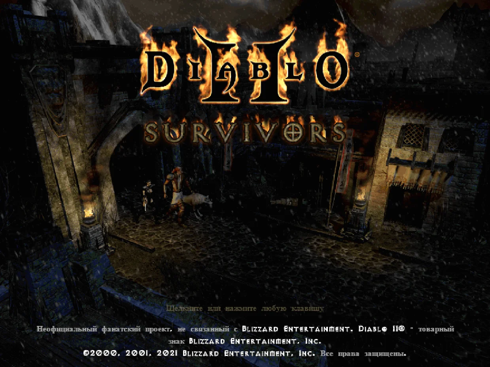
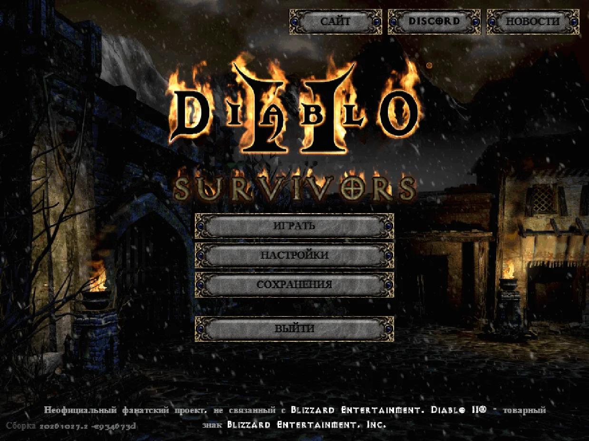
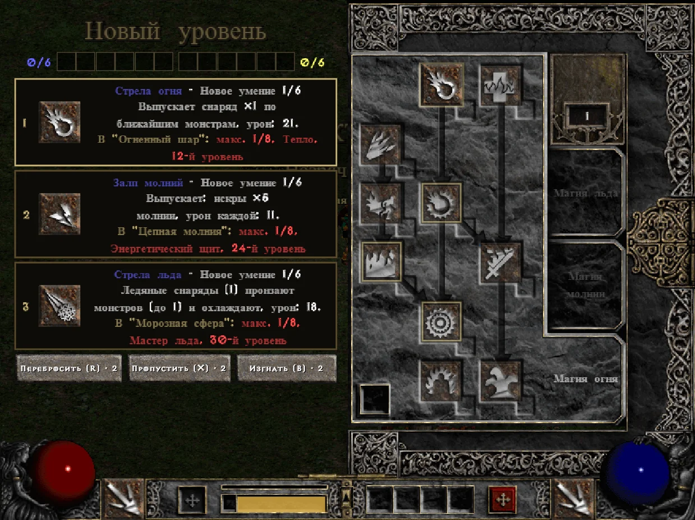
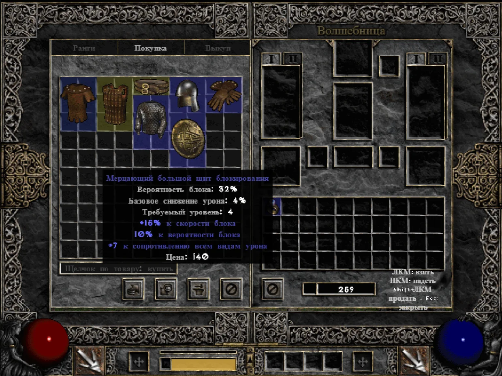
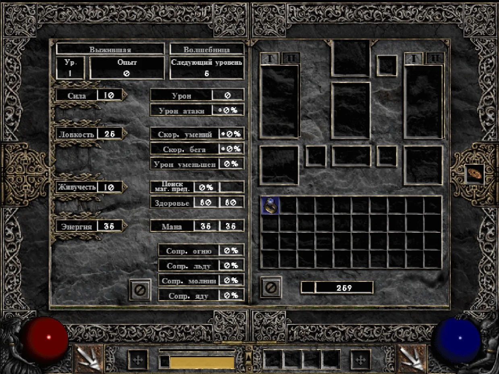
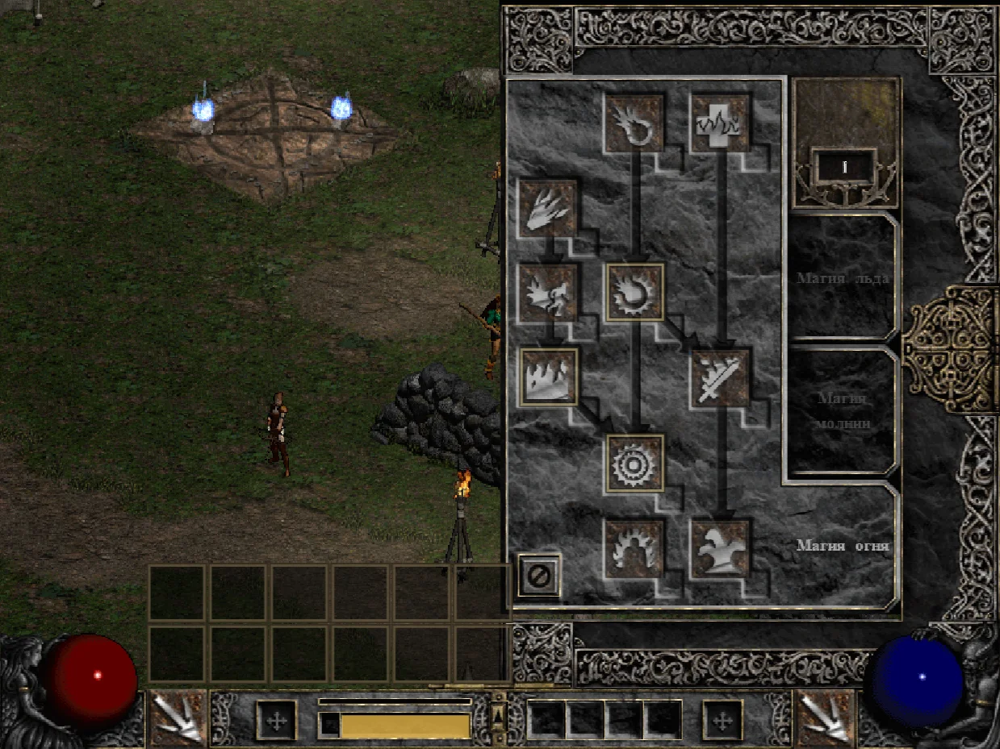
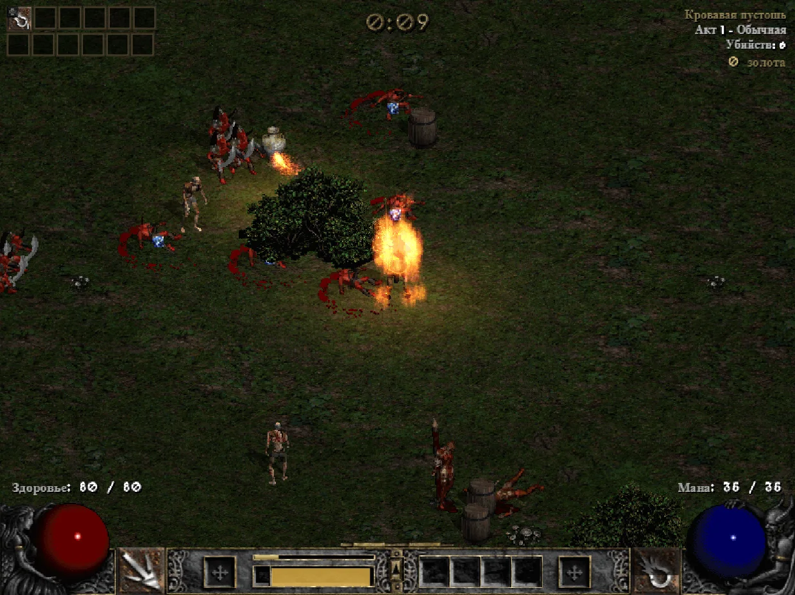
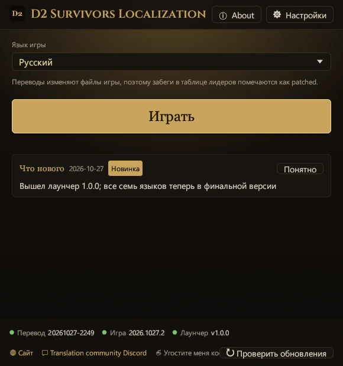

D2 Survivors
Автор: framara
Бесплатная неофициальная фанатская игра в жанре survivors-like (рогалик) в мире Diablo II. Проект перевода не связан с автором игры; о проблемах самой игры сообщайте через официальные каналы.
Неофициальный фанатский перевод
Играйте в Diablo 2 Survivors на русском. Этот русификатор переводит саму игру, а не просто гайд: интерфейс, умения, предметы, монстров и карточки уровня, с терминами из официального перевода Diablo II: Resurrected. Лаунчер устанавливает, обновляет и откатывает его в один клик.
Официальная браузерная версия удалена, поэтому перевод работает только в настольной версии (лаунчер для Windows).
Играли в браузерной версии? Откройте «Перенести сохранение из браузера» (официальная страница, на английском) в том же браузере, где вы играли, скачайте сохранение в файл .txt, а затем в главном меню настольной версии выберите СОХРАНЕНИЯ (SAVES) → Открыть файл сохранения (Open a save file) и укажите этот файл.








Кадры из игры: D2 Survivors (framara), на собственных файлах Diablo II игрока
Проект содержит только перевод, без файлов игры. Перед началом возьмите D2 Survivors и Diablo II из официальных источников ниже.
Автор: framara
Бесплатная неофициальная фанатская игра в жанре survivors-like (рогалик) в мире Diablo II. Проект перевода не связан с автором игры; о проблемах самой игры сообщайте через официальные каналы.
Blizzard Entertainment
D2 Survivors берёт графику и звук из Diablo II на вашем компьютере, поэтому нужна своя копия Diablo II: Resurrected или Diablo II + Lord of Destruction (патч 1.14).
Термины: названия умений, предметов, монстров и локаций взяты из официального перевода Diablo II: Resurrected; остальное переведено в этом проекте.
Готовы и вышли в финальной версии: китайский (традиционный), китайский (упрощённый), японский, немецкий, французский, русский и польский.
Обновления перевода, языков и лаунчера. Лаунчер каждый раз получает свежий перевод — заново скачивать ничего не нужно.
Это список изменений от автора D2 Survivors, мы его только переводим.
Это список изменений от автора D2 Survivors, мы его только переводим.
Это список изменений от автора D2 Survivors, мы его только переводим.
Это список изменений от автора D2 Survivors, мы его только переводим.
Файлы игры вручную править не нужно — всё делает лаунчер. Сначала закройте игру. Лаунчер работает на том языке, который вы выберете.
Скачайте версию для ПК с официального сайта D2 Survivors, укажите в настройках папку с Diablo II и убедитесь, что игра запускается.
Скачайте d2s-launcher.exe и положите в любую папку. Установка не нужна.
При первом запуске появится экран со всеми языками, каждый написан на нём самом. Нажмите свой язык, затем «→» — и лаунчер, и перевод игры будут на этом языке.
① «Игра»: лаунчер находит D2 Survivors (по умолчанию в %LOCALAPPDATA%\Programs\D2 Survivors; если игра в другом месте — «Выбрать папку…»). ② «Diablo II»: ищет вашу Diablo II: Resurrected или классическую Diablo II; если не нашёл, можно нажать «Пропустить». ③ «Готово»: при желании нажмите «Создать ярлык на рабочем столе», затем «Играть». При первом запуске скачается перевод, а оригинальный app.asar сохранится в резервную копию.
По умолчанию при каждом запуске скачивается свежий перевод («Обновлять переводы при запуске» в «Настройках»), а после обновлений игры он применяется заново автоматически. Сменить язык можно в главном окне, в списке «Язык игры».
app.asar вернётся на место.%LOCALAPPDATA%\D2SurvivorsLauncher.Чтобы сделать свой ярлык, укажите эту строку как его объект — игра запустится на выбранном языке без окна лаунчера. (Ярлык из «Создать ярлык на рабочем столе» открывает окно и сразу запускает игру.)
d2s-launcher.exe --launch --lang ru--launch--play--lang <id>--no-update--update--restore--self-update--statusНет. Это неофициальный фанатский перевод, не связанный с разработчиками D2 Survivors и Blizzard Entertainment.
Код — да. Исходники лаунчера, этого сайта и инструментов лежат на GitHub под лицензией MIT. Лаунчер автоматически собирается из этого открытого кода в GitHub Actions (история сборок), а к каждому релизу приложен d2s-launcher.exe.sha256, чтобы вы могли проверить файл сами.
Данные перевода (словари) пока не под открытой лицензией: все права защищены, см. dict/LICENSE. Официальные термины в них принадлежат Blizzard Entertainment.
Перевод готов: всё переведено и проверено в игре на пропуски. Затем весь интерфейс и 300 случайных строк ещё раз независимо вычитали и по итогам внесли около 640 исправлений по всему словарю. Названия магических предметов и уникальных монстров собираются с учётом русского порядка слов и рода, например «Прочный наголовник разума», а у героинь — женские титулы. Около 66 % терминов взято прямо из официального перевода Diablo II: Resurrected. Кириллица выводится шрифтами D2R: Exocet для заголовков и Philosopher для текста.
Заметили ошибку — сообщите нам.
Пока нет. Лаунчер есть только для Windows, а официальная браузерная версия удалена, поэтому наша закладка тоже больше не работает. На Mac, Linux и телефоне перевод пока использовать нельзя.
Нет. Лаунчер заменяет только resources\app.asar в папке игры, предварительно сохранив оригинал. Сохранения лежат в другом месте и не читаются и не меняются.
Да. Разработчик оставил официальную страницу переноса сохранений (только на английском и корейском). Она находит в вашем браузере сохранение браузерной версии и даёт скачать его в виде файла .txt.
Обязательно откройте её в том же браузере, в котором вы играли в браузерную версию (и в том же профиле браузера), иначе сохранение не найдётся. В другом браузере или в режиме инкогнито ничего не получится.
Затем откройте настольную версию, в главном меню выберите СОХРАНЕНИЯ (SAVES) → Открыть файл сохранения (Open a save file) и укажите скачанный .txt. Сохранения героического режима (Hardcore) перенести нельзя, как и в самой игре.
Обновление заменяет app.asar, и перевод пропадает, пока вы снова не запустите игру через лаунчер или ярлык — он применит его заново.
Если новая версия изменилась слишком сильно, лаунчер ничего не ломает: он запускает оригинальную игру и сообщает, что перевод исправляется. Когда его исправят, при следующем запуске он применится сам — делать ничего не нужно.
Перевод занимает встроенный в игру слот корейского языка, поэтому в меню на его месте отображается выбранный язык. Чтобы играть на корейском, выберите в лаунчере «한국어 (원본)».
Весь текст игры переведён и проверен в игре на пропуски. Если вы видите английский, скорее всего, обновление игры добавило новый текст; перевод дополнят в одном из следующих обновлений, и лаунчер скачает его сам. Если текст так и остаётся английским, сообщите нам.
При выборе языка перевода игра помечает записи как patched; чтобы попадать в таблицу как обычно, выберите в лаунчере в «Языке игры» English.
У лаунчера нет цифровой подписи (сертификат стоит денег каждый год), поэтому Windows SmartScreen предупреждает, пока его не скачает достаточно людей.
Подписи нет, но исходный код и процесс сборки лаунчера открыты.
Нажмите «Подробнее», затем «Выполнить в любом случае» — больше Windows спрашивать не будет. Скачивайте лаунчер только с этого сайта или с GitHub Releases. В каждом релизе есть d2s-launcher.exe.sha256; сверить можно командой certutil -hashfile d2s-launcher.exe SHA256.
Если браузер пишет, что файл редко скачивают, выберите в меню загрузки «Сохранить».
Нет. Сама игра разрешает в именах персонажей только английские буквы и корейский.
Опечатки, непереведённый текст и проблемы с лаунчером — в Discord сообщества переводчиков, там же публикуются новости.
Об ошибках перевода и программы можно также сообщить в GitHub Issues.
Проблемы самой игры (не связанные с переводом) — в официальный Discord D2 Survivors (на английском).
Будем рады! Все языки вышли в финальной версии, но перевод всегда можно улучшить. Если заметили неуклюжую фразу или опечатку, особенно в родном языке, сообщите нам. Пишите нам здесь.